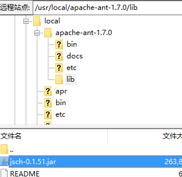

配置ant环境
1：解压apache-ant-1.7.0
2：配置环境变量
vim /etc/profile添加如下配置export ANT_HOME=/usr/local/apache-ant-1.7.0export PATH=$PATH:$ANT_HOME/bin
vim /etc/profile
添加如下配置
export ANT_HOME=/usr/local/apache-ant-1.7.0
export PATH=$PATH:$ANT_HOME/bin
需要将jsch-0.1.51.jar文件放入ant的的lib中。 用来支持sshexec命令
